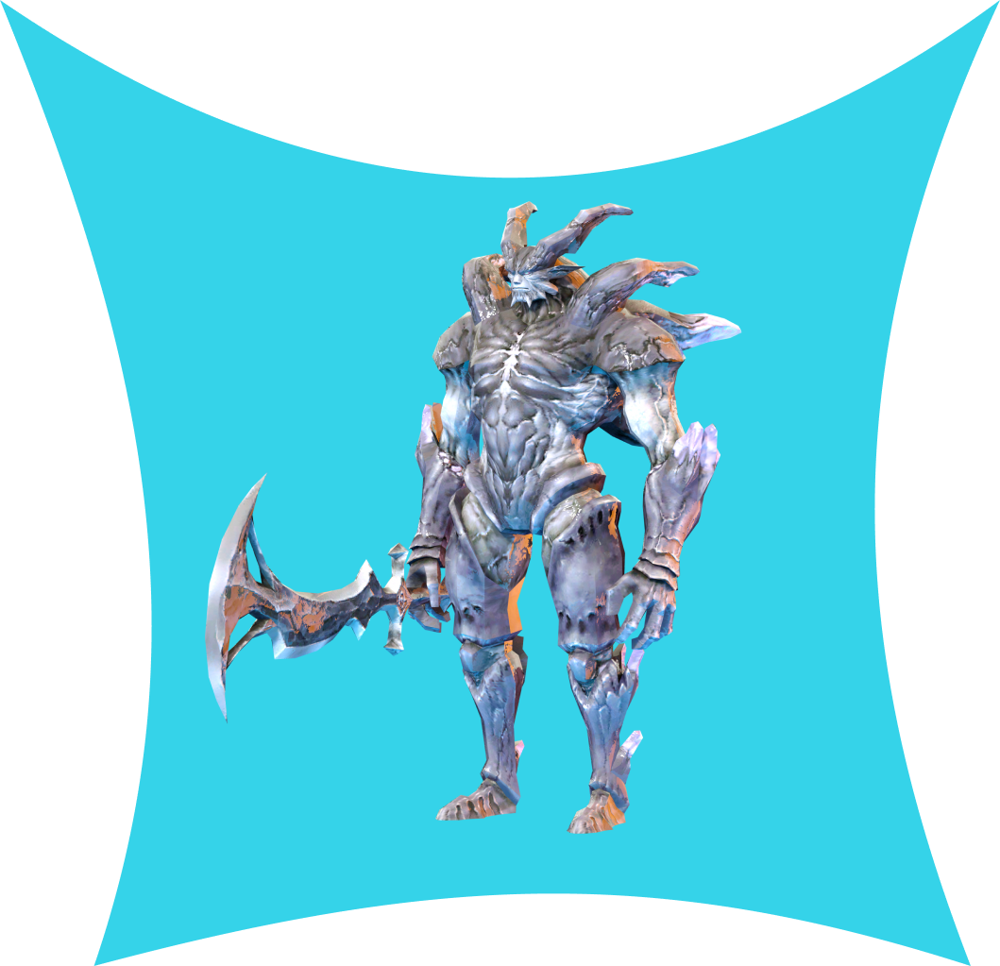

Hi，我是Youmin！
我是一位來自新大陸的Junior網頁全端工程師、遊戲開發工程師、Python工程師、王立書士隊隊員以及蒼藍星。專長是網路爬蟲、網頁全端開發、機器學習、獵龍和魔物以及遊戲開發等等。
了解更多

關於我的一些事情
我在龍歷院完成了王立古生物書士隊、獵人以及全端工程師的歷練，主要興趣在網頁開發、遊戲開發、狩獵魔物以及紀錄魔物的生態訊息。我在去到新大陸時，完全沒有寫過程式，也沒有狩獵過魔物，在眾多的程式和武器中，我選擇了與前端相關的HTML、CSS、JavaScript，後端較好上手的Python以及遠程武器輕弩作為入門武器。過後熟練前端的一些操作後，繼續學習RWS、SCSS/SASS、Bootstrap、Vue.js以及React.js框架等，而後端則繼續深入Flask、Django、C#以及ASP.Net等，至於武器則改選為近戰秀操作的太刀，而透過線上課程影片的引導，不僅做出了一些作品，還升上了獵人大師，成為了新大陸的蒼藍星！
我的主要技能：JavaScript、React.js、Python、C#、Vue.js、ASP.Net以及網站前端開發。
我擅長使用的武器：太刀、大劍、斬擊斧、變形斧、狩獵笛、輕弩、重弩、片手劍。
| 自我簡介 | 畢業於王立書士隊狩獵紀錄既全端網頁工程學系，興趣是網頁前端設計、遊戲開發以及狩獵魔物，我也在網路上繼續學習AI、機器學習、深度學習以及演算法等，並且在等待新的調查團到來 |
| 學歷 | 王立書士隊、大師級獵人 |
| 經歷 |
|
| 語言 |
|
| 專長 |
|